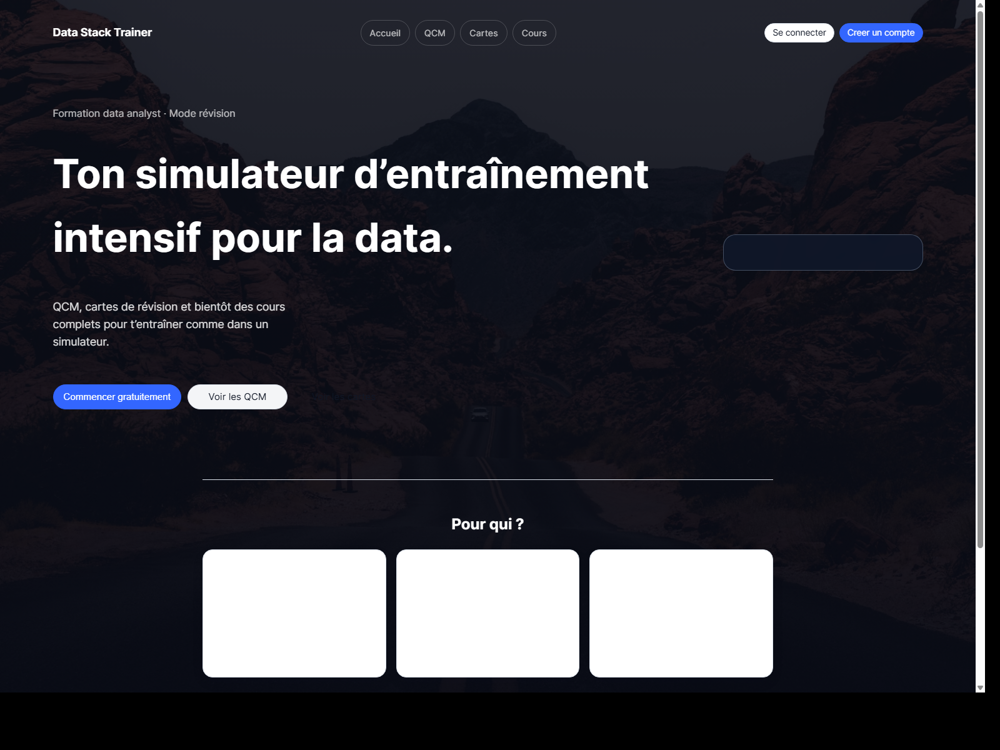

Projet
Data Trainers - plateforme de révision et simulateur Data Analyst
Objectif : construire une plateforme de révision data avec deux couches produit bien distinctes. D’un côté, un simulateur gratuit fondé sur des QCM et des flashcards. De l’autre, un programme structuré Data Analyst 2025+, piloté par une logique de répétition espacée, d’authentification, de dashboard élève et de back-office admin.
Le projet s’appelle Data Science Trainer, nom d’emprunt choisi le temps que le branding soit vraiment construit. Le coeur du produit reste le même : un environnement de révision intensif pour former ou remettre à niveau un profil Data Analyst.


Genèse
J’ai commencé ce projet pour une raison très simple : mieux intégrer mes cours et aider mes camarades de promo à réviser plus efficacement. Au départ, je ne le pensais pas du tout comme un produit à commercialiser. Je voulais surtout construire un outil utile, concret et assez robuste pour soutenir notre rythme de formation.
En voyant l’engouement autour du projet, les retours positifs et le potentiel d’usage, j’ai décidé de l’approfondir. C’est là que l’idée a changé d’échelle : passer d’un simple support personnel de révision à une vraie plateforme capable de structurer l’entraînement, la progression et, plus tard, un programme complet.
Positionnement produit
J’ai pensé le projet comme un LMS à deux vitesses. La couche publique sert à entrer vite dans l’entraînement : choix d’un thème, lancement de tests, cartes de révision, puis création de compte pour sauvegarder la progression. La couche premium transforme ensuite cette matière en programme complet semaine par semaine.
Deux expériences dans le même produit
- Simulateur gratuit : banque de QCM, flashcards, révision ponctuelle, tests rapides et accès libre au contenu public.
- Programme payant : cursus structuré, routine journalière, progression sauvegardée, onboarding, dashboard élève et logique de personnalisation.
- Compte admin / créateur : gestion des contenus, lecture des KPI d’usage, suivi des utilisateurs et pilotage global de la plateforme.
Dès la landing, j’ai ciblé autant la reconversion, les étudiants que les professionnels en poste, avec une promesse simple : s’entraîner sur SQL, Python, stats, BI, machine learning, storytelling et soft skills dans un environnement de révision unique.
Mécanique pédagogique
La partie la plus forte du projet est la logique d’apprentissage. J’ai construit le programme payant autour d’une routine journalière stricte : commencer par un test de révision généré dynamiquement, continuer avec le nouveau cours du jour, puis terminer par un exercice de validation.
Cette logique vient directement de ce que j’ai appris en construisant Apprendre avec la Science : répétition espacée, récupération active, planification au bon moment et réduction maximale de la friction de révision. Data Trainers reprend ces principes, mais en les appliquant à un corpus Data Analyst beaucoup plus large et plus industrialisé.
Contenu
- Structure des catégories et sous-catégories.
- Banque de tests QCM.
- Decks de flashcards par sous-catégorie.
- Modules, objectifs, outline et liste de lessons.
- Unités atomiques du programme Data Analyst 2025+.
Volumétrie du contenu
J’ai déjà structuré 18 catégories, 175 modules de cours, 366 lessons, 3 490 tests, 13 960 questions, 176 decks et 700 cartes.
Cette volumétrie doit se lire honnêtement : elle traduit une industrialisation très avancée de la structure, mais une partie importante du contenu pédagogique reste encore scaffoldée. Le point fort du projet est donc autant dans la modélisation du système d’apprentissage que dans la rédaction finale des contenus.
Important sur les 3 490 tests
- Je ne parle pas ici d’une banque générée à la volée par LLM.
- L’objectif est au contraire d’avoir un contenu relu, stabilisé, puis soumis à un bêta test public.
- Chaque bloc doit ensuite passer par de vraies itérations pédagogiques avant d’être considéré comme finalisé.
Architecture technique
La version cible est organisée en monorepo avec un front moderne
React 19 + TypeScript + Vite + Tailwind dans
apps/frontend-new, et un backend FastAPI + SQLAlchemy + PostgreSQL dans
apps/backend-python.
Le contenu reste éditable en JSON, puis pensé pour être migré vers une base relationnelle.
Ce que j’ai déjà codé
- Front React : routes publiques et protégées, landing, login, register, dashboard, cartes, parcours QCM, espace admin.
- Backend FastAPI :
/register,/token,/auth/google,/users/me,/courses,/tests/tree,/tests/{id}et plusieurs routes admin. - Modèle de données : users, user progress, courses, lessons, tests, questions, decks et cards.
- Admin UI : dashboard global, liste utilisateurs, détail utilisateur, gestion des QCM et gestion des decks de cartes.
J’ai aussi gardé un front statique legacy, qui correspond à une étape précédente du produit : pages HTML/CSS/JS pour la landing, les tests, les cartes, les cours à venir, le profil et le dashboard élève.
Espace admin et analytique
Côté administration, le projet ne se limite pas à un simple CRUD de contenu. Le dashboard admin expose déjà une lecture pilotage produit : nombre d’utilisateurs, activité 7/30 jours, volume de cours, volume de leçons, volume de questions et répartition du contenu par catégorie.
Les pages admin vont plus loin avec une liste utilisateurs, un détail utilisateur, une gestion des QCM et une gestion des decks / cartes. Cela donne au projet une vraie dimension plateforme plutôt que simple vitrine pédagogique.
Ambition fonctionnelle documentée
- Onboarding visiteur vers compte créé, avec import de la progression d’usage anonyme.
- Authentification email / mot de passe, reset, Google OAuth et profil enrichi.
- Tableau de bord élève avec priorités du jour, progression par thème et reprise d’activité.
- Spécification RGPD détaillée : consentements versionnés, export de profil, suppression de compte, gestion du cycle de vie des données.
La spécification backend est même plus ambitieuse que l’implémentation actuelle : refresh tokens par device, versioning des consentements, politique de suppression / anonymisation et endpoints d’export.
Aujourd’hui, le site reste un prototype. C’est aussi pour cela que je ne le présente pas encore comme un produit fini. Je préfère continuer à consolider le fond, tester les usages et faire itérer le contenu avant d’en faire une version publique vraiment assumée.